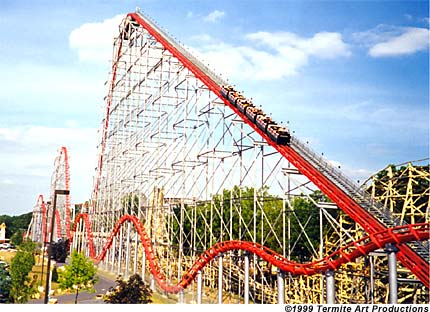

This Website is about Robots and Roller Coasters.
Robots are a thing of the future. Robots have been getting better and becoming more developed over time. The first Robot came in 1954. Now robots are being invented to go from doing just simple tasks to driving autonomous cars. Robots came in many different shapes and forms. Robots are very intelligent and many technology companies are investing and creating more smarter robots.
Roller Coasters are a thrilling and fun experience. Roller Coasters have been around since the late 1800's. The original roller coasters were wood roller coasters but now steel roller coasters are more popular. There are 37+ different types of roller coasters today. There are so many roller coasters in the world. this is an image of my personal favorite roller coaster that I have been on. This roller coaster is called Steel Force and it is in Dorney Park in Allentown, Pennsylvania, USA. Steel Force is a great steel roller coaster and the peak of the roller coaster you can have a view of the whole park. I would highly reccommend roller coasters, if you are not afraid of them, of course.